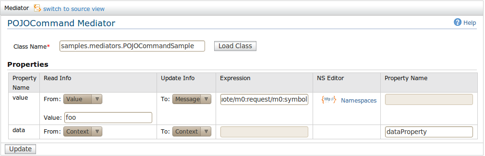

Command Mediator
The pojoCommand mediator creates an instance of the specified command class - which may implement the
org.apache.synapse.Command interface or should have a public void method "public void execute()". If any
properties are specified, the corresponding setter methods are invoked on the class before each message
is executed. It should be noted that a new instance of the POJO Command class is created to process
each message processed. After execution of the POJO Command mediator, depending on the 'action'
attribute of the property, the new value returned by a call to the corresponding getter method is
stored back to the message or to the context. The 'action' attribute may specify whether this behaviour
is expected or not via the Read, Update and ReadAndUpdate properties.

Here are the configuration options related to the Command Mediator.
-
Class Name: The class name of the POJO class. You have to give the qualified name of the class and click "Load Class"
button.
-
Properties: After you click the "Load Class" and if it is a valid POJO Class you will see the
properties in the POJO class in a table with following fields.
-
Property Name: Name of the property. This will be automatically loaded from the class.
-
Read Info: The value to set for the property. You can choose the value from either of following sources
-
Value: A Static value
-
Message: Read a value from the incomming message. You can provide the XPath expression to execute on the
message in the 'Expression' text field.
-
Context: Read a value from the Message Context properties. You can provide the property key in the 'Property Name' text field.
-
Update Info: Specify the action to do with reading the property value. You can choose following actions.
-
NONE: No activitly
-
Message: Update the message. You can provide the XPath expression of the element you want to update
in the 'Expression' text field.
-
Context: Update the properties (Message Context). You can give the property key in the 'Property Name' text field.